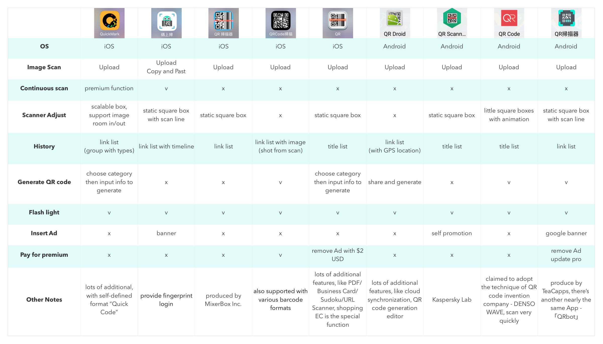
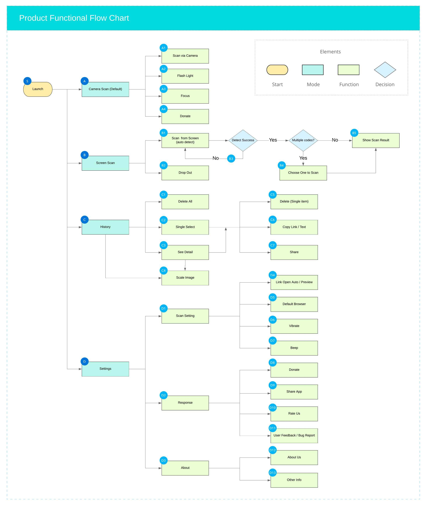
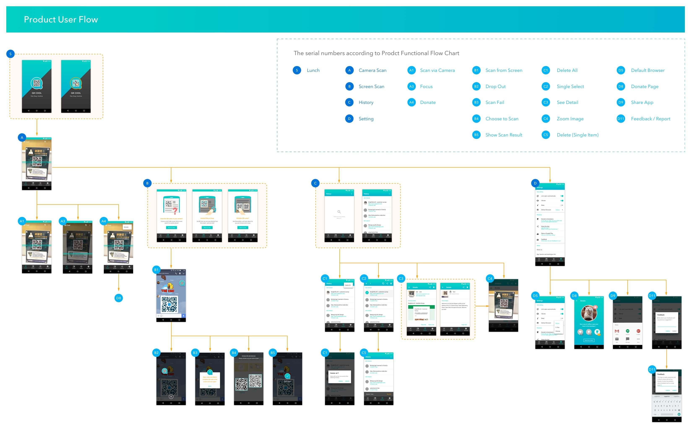

The most intuitive QR code scanner.
Come on, don’t take screen shot or even search for another phone!
Via QR Cool, you can scan directly from the screen. Just one click!
Not the problem, we’ll detect automatically for you, just choose one to scan.
Full compliance with Material Design
Intuitive way to scan on the screen
Well functionality &
Easy to use
In this project, I worked with an excellent Android developer, Richard. I was responsible for whole porduct planning, from concept generation, competitive product analysis, product requirement definition to UI implementation.
Since QR code scanner Applications are well known and in Red Ocean Market. For standing out our unique features, I did survey of the scanner Apps which have huge amount of downloads in app store, helping us to define functions we want to achieve in first version.
After doing product reserch and competitor analysis, We converged functions to the number which are essential and could afford to be implemented.
The UI design is fully comply with Google Material Design guidelines, that's because we want to lower the user learning curve and make it feel just like native App. Fast, easy and intuitive are our core values of the product position.
QR Cool is a mobile app for Android, which can easily use the floating button to scan the QR codes on the phone screen. The concept came out with the confusing situation, when we wanted to scan the QR code within an image that just shown on mobile device but didn't know how to do that. Thus we decided to solve this problem with a more intuitive and user friendly way.